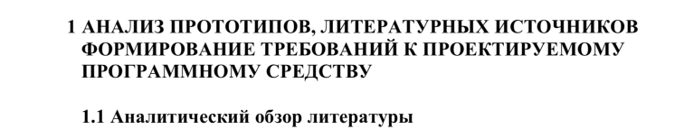
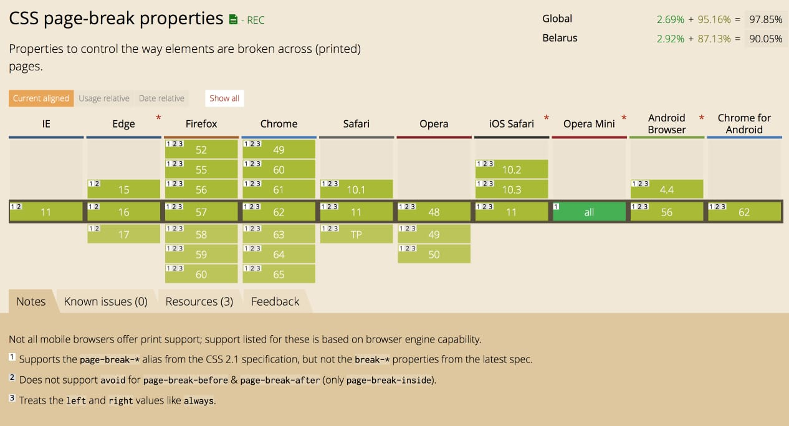

Никита Дубко
- front-end разработчик;
- адепт философии Pure CSS Images;
- преподавал в БГУИР.
Когда вы в последний раз пробовали распечатать ваш сайт?


— У вас не стоит точка в сноске.
— Да, но мое исследование совершит револ...
— У вас не стоит точка в сноске.
Стандарты оформления
- ГОСТ 7.32—2001 «Отчет о научно-исследовательской работе»
- ГОСТ 2.105—95 «Общие требования к текстовым документам»
- СТП 01—2013 «Дипломные проекты (работы). Общие требования»
- Рекомендации выпускающей кафедры
- «Неоспоримый» опыт нормоконтроллера


Уже используют CSS
для печати
Спецификации
Как подключить стили для печати
/* CSS */
@import "print.css" print;
@media print { /* IE 9+ */
body {
background-color: #fff;
color: #000;
}
}
Как подключить стили для печати
<!-- HTML -->
<!-- IE 3+ -->
<link rel="stylesheet"
media="print"
href="print.css"
type="text/css" />
Как вызвать печать
<!-- HTML -->
<button type="button"
onclick="callPrint()">
<i class="icon-print"></i> Вжух!
</button>
// JavaScript
function callPrint() {
// ...
window.print();
}
@page {
margin: 20mm 15mm;
size: A4 portrait; /* landscape */
@bottom-right {
content: counter(page);
}
}
@page :left {
margin-left: 3cm;
}
@page :right {
margin-right: 3cm;
}
@page :blank {
@top-center {
content: "Пустая страница";
}
}
@page :first {
@bottom-center {
content: "Здесь могла быть ваша реклама";
}
}
top-left-corner
top-left
top-center
top-right
top-right-corner
left-top
left-middle
left-bottom
right-top
right-middle
right-bottom
bottom-left-corner
bottom-left
bottom-center
bottom-right
bottom-right-corner
Абсолютные единицы измерения
- mm
- cm (10 mm)
- in (2.54 cm)
- pt (1/72 in)
- pc (12 pt)
px
1in всегда равен 96px

body {
counter-reset: chapternum figurenum;
}
h1.numered::before {
counter-increment: chapternum;
content: counter(chapternum) " ";
}

h1 {
counter-reset: figurenum;
}
figcaption::before {
counter-increment: figurenum;
content: counter(chapternum) "." counter(figurenum) " — ";
}
h1 {
page-break-before: always;
}
.page-break {
page-break-after: always; /* auto | avoid | left | right */
}
figure {
page-break-inside: avoid;
}

p {
widows: 2; /* new page */
orphans: 2; /* old page */
}

Тетрагидропиранилциклопентилтетрагидропиридопиридиновые
p {
word-break: break-all;
hyphens: auto; /* manual | none */
}
­


h1 {
string-set: heading content();
}
@page :right {
@top-right {
content: string(heading);
}
}

Сноска<span class="footnote">Примечание (замечание), помещаемое
внизу полосы (постраничная сноска) или в конце текста
(концевая сноска).</span>
@page {
@footnote {
border-top: 1pt solid black;
}
}
.footnote {
float: footnote;
counter-increment: footnote;
}
.footnote::footnote-call {
content: counter(footnote);
font-size: 9pt;
vertical-align: super;
}
.footnote::footnote-marker { font-weight: bold; }
<!-- HTML -->
<a class="xref" href="#chapter-1" title="Глава 1">Глава 1</a>
/* CSS */
a.xref::after {
content: " (страница " target-counter(attr(href url), page) ")";
}
ul.toc a::after {
content: leader('.') target-counter(attr(href url), page);
}

Как сделать сайт печатаемым?
- Используйте семантическую верстку
- Проставьте размеры для всех изображений и svg
- Уберите
@media screen
- Напишите отдельный CSS с печатными стилями
- Верните
@media screen
html5-boilerplate
*,
*::before,
*::after {
background: transparent !important;
color: #000 !important;
/* Black prints faster: http://www.sanbeiji.com/archives/953 */
box-shadow: none !important;
text-shadow: none !important;
}
a { text-decoration: underline; }
a[href^="http"]:not([href*="mysite.com"])::after {
content: " (" attr(href) ")";
}
a[href^="#"]::after,
a[href^="javascript:"]::after {
content: "";
}
img { max-width: 100% !important; }
* {
-webkit-print-color-adjust: exact;
print-color-adjust: exact;
}
Распечатай Яндекс.Карты — Вадим Макишвили
display: none;

function beforePrint() { /* add print styles */ }
function afterPrint() { /* remove print styles */ }
window.onbeforeprint = beforePrint; // IE5+
window.onafterprint = afterPrint;
if (window.matchMedia) { // IE10+
window
.matchMedia('print')
.addListener(function(mq) {
mq.matches ? beforePrint() : afterPrint();
});
}
Как тестировать?
- Принтер (внезапно)
- Предпросмотр печати
- Сохранить как PDF
- Developer Tools (Chrome, Firefox)
- Prince
- Puppeteer
Chrome Developer Tools
const prince = require('prince');
const options = {};
prince(options)
.inputs('page.html')
.output('page.pdf')
.execute()
.then(function () {
console.log('OK: Done');
}, function (error) {
console.log('ERROR: ', util.inspect(error));
});
const puppeteer = require('puppeteer');
(async () => {
const browser = await puppeteer.launch();
const page = await browser.newPage();
await page.goto(
'https://news.ycombinator.com',
{ waitUntil: 'networkidle2' }
);
await page.pdf({ path: 'hn.pdf', format: 'A4' });
await browser.close();
})();
Готовые решения для сайтов
Материалы
Видео


 mefody/print-css
mefody/print-css


{kind=link}